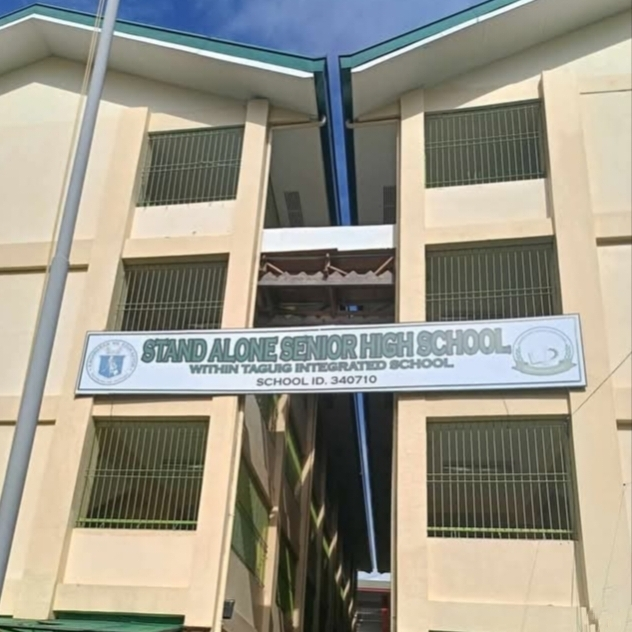

index.html
GRADE 11-PRODUCTION
 
STAND ALONE SENIOR HIGH
A stand-alone Senior High School (SHS) is a secondary school that operates independently from a Junior High School (JHS) or Integrated School (IS). It has its own distinct location and a separate school head (principal). This contrasts with Integrated SHS, which is located within an existing JHS or IS and shares the same school head.
ADRIAN R. DIMAGUILA
11-ICT PRODUCTION